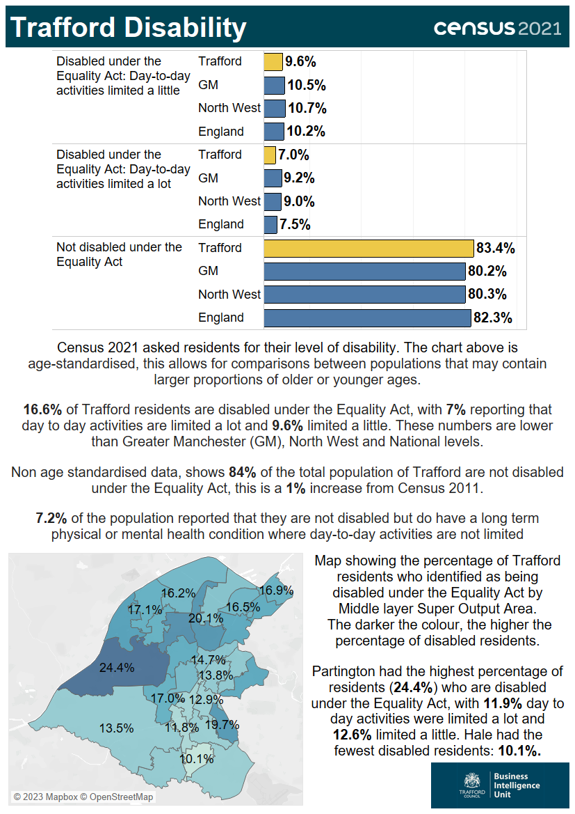

Source: Office for National Statistics.

The infographic contains statistics released on from the census taken on Sunday 21 March 2021, regarding the disability of residents. The Census 2021 asked residents for their level of disability, with the data released in both raw and age-standardised forms. Age-standardised data allows for comparisons between populations that may contain larger proportions of older or younger ages. Using the age-standardised data, 16.6% of Trafford residents are disabled under the Equality Act, with 7% reporting that day to day activities are limited a lot and 9.6% limited a little. These are lower than Greater Manchester (9.2% limited a lot, 10.5% limited a little), North West (9% limited a lot, 10.7% limited a little) and England (7.5% limited a lot, 10.2% limited a little). The percentage of residents not disabled under the Equality Act is higher in Trafford, 83.4% compared with 80.2% in Greater Manchester, 80.3% in North West and 82.3% in England. Non age-standardised data shows 84% of the total population of Trafford are not disabled under the Equality Act, this is a 1% increase from Census 2011. 7.2% of the population reported that they are not disabled but do have a long term physical or mental health condition where day-to-day activities are not limited. When comparing areas within Trafford, Partington had the highest percentage of residents (24.4%) who are disabled under the Equality Act, with 11.9% whose day-to-day activities were limited a lot and 12.6% limited a little. Hale had the fewest disabled residents: 10.1%.